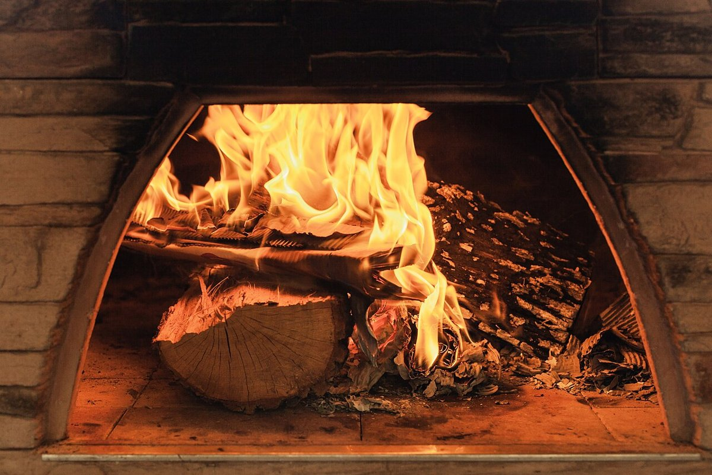
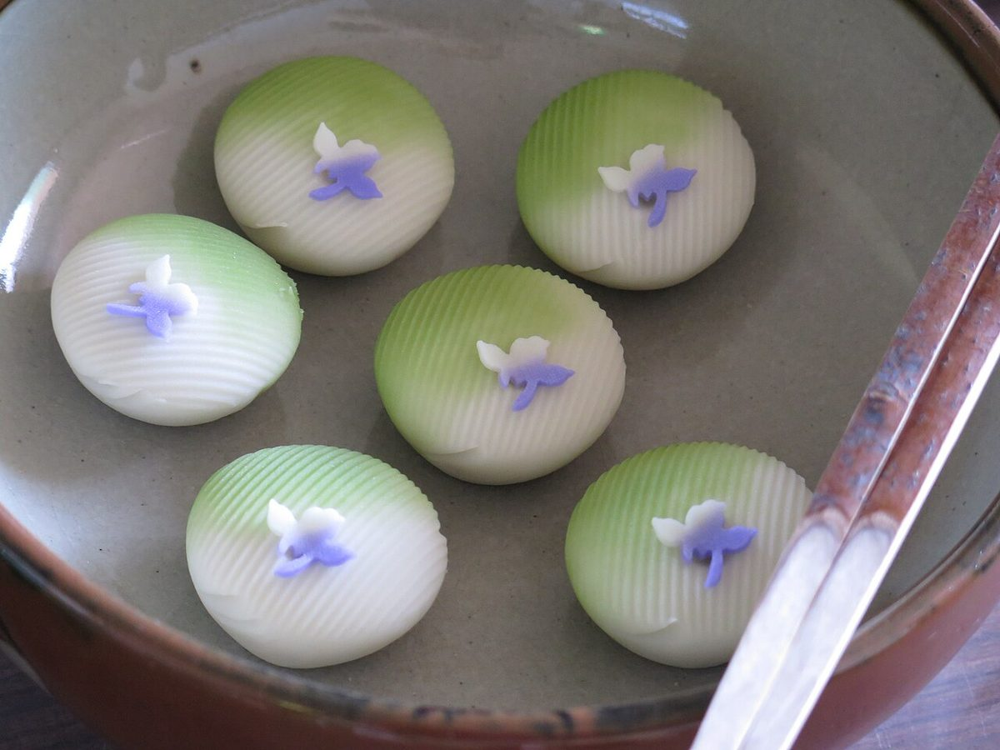
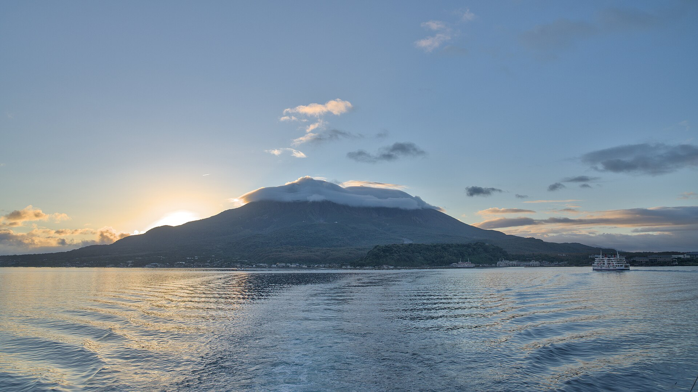
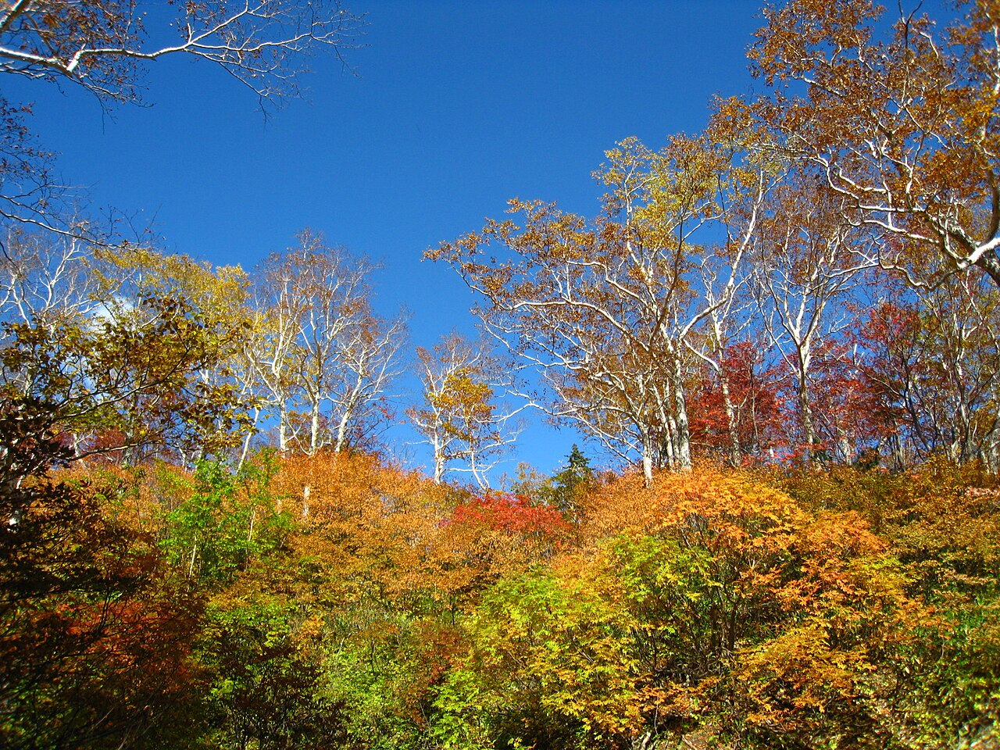

お店の想い
20年こだわった焼き芋を、地元指宿で。
お店のInstagramには、「20年間焼き芋にこだわり、独自製法で焼き上げる焼き芋をより多くの方々にご賞味頂きたく、地元指宿に移転オープンさせて頂きました。」とあります。
焼き芋を軸にした、さつまいもスイーツのお店です。テイクアウトでも、お店でも楽しめるようです(口コミサイトの掲載情報)。
店名「Oimo no Omoi」の意味は確認できていません。制作側のイメージとして、「お芋への想い」と読める名前だと感じています。

メニュー
お芋のお菓子たち
口コミサイトの掲載から、焼き芋のほか、芋のスイーツ(紅いも・紫芋・抹茶・ほうじ茶・紅茶などの味)、大学芋、一口サイズの芋菓子などがあるようです。内容・価格・提供状況は変わることがあります。詳細は準備中です。

焼き芋・芋スイーツ
お店の味の詳細は準備中です。写真は焼き菓子のイメージです。

芋のお菓子
紫芋などを使ったお菓子。詳細・価格は準備中です。

抹茶・ほうじ茶の味
抹茶やほうじ茶の風味のスイーツ。詳細・価格は準備中です。

お茶と一緒に
お飲み物は準備中です。写真はイメージです。
イメージ
指宿の空気と、あたたかな一皿。






口コミ
お客様の声(イメージ例)
イメージ例
焼き芋の甘さがやさしくて、散歩のついでに立ち寄りました。お土産にもしたくなります。
イメージ例
お芋のスイーツは抹茶味が好みでした。ゆっくり食べられる雰囲気が良かったです。
イメージ例
家族みんなで分けて食べました。指宿に来たらまた寄りたいお店です。
※創作のイメージ例です。実在のお客様の声ではありません。